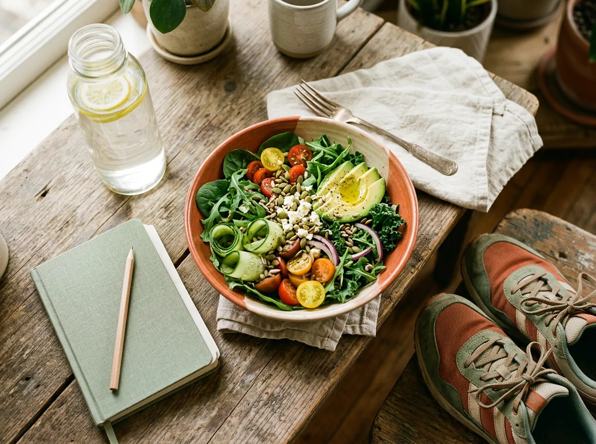

Recomendaciones generales para el día a día, basadas en pautas de salud pública ampliamente aceptadas. No sustituyen una valoración individualizada — para tu caso concreto, lo mejor es una consulta.
La mayoría de mejoras reales en salud no vienen de dietas estrictas de corta duración, sino de hábitos sencillos que se mantienen: comer de forma más natural, moverse un poco cada día, dormir lo suficiente y cuidar el estado de ánimo. Aquí reunimos ideas prácticas organizadas por tema; explora las que más te interesen.

Pulsa un tema para filtrar, o abre cada tarjeta para leer el consejo completo.
Divide el plato en tres partes: la mitad con verduras y hortalizas variadas, un cuarto con proteína (legumbres, pescado, huevo o carnes magras) y un cuarto con cereales integrales o tubérculos. Usa aceite de oliva como grasa principal. Es una guía visual sencilla, sin necesidad de contar calorías.
Cuanto más larga y difícil de leer sea la lista de ingredientes de un producto, más probable es que sea ultraprocesado. Prioriza alimentos reconocibles — fruta, verdura, legumbres, frutos secos, pescado — frente a bollería, snacks y refrescos, que aportan muchas calorías con poco valor nutricional.
Cocinar tus propias comidas te permite controlar la cantidad de sal, azúcar y grasa que añades, algo que no siempre es posible con la comida preparada o de restaurante. No hace falta que sea complicado: unas pocas recetas sencillas que domines bien ya marcan una diferencia notable.
La sensación de sed aparece cuando ya existe cierto grado de deshidratación. Tener una botella de agua a la vista durante el día ayuda a recordar beber con regularidad, especialmente en épocas de calor o si haces ejercicio.
Los refrescos, zumos envasados y bebidas energéticas suelen aportar mucho azúcar con muy pocos nutrientes. El agua, con o sin gas, sigue siendo la opción más recomendable para mantenerte hidratado a lo largo del día.
Caminar rápido, ir en bicicleta o nadar son buenas opciones de actividad aeróbica moderada. Repartir estos minutos en varios días de la semana, en lugar de concentrarlos en uno solo, suele ser más sostenible y beneficioso.
Trabajar la musculatura con pesas, bandas elásticas o el propio peso corporal ayuda a proteger huesos y articulaciones con el paso de los años, y complementa muy bien al ejercicio aeróbico.
Si tienes un trabajo de oficina, levantarte y caminar unos minutos cada hora reduce los riesgos asociados a pasar muchas horas sentado, incluso si ya cumples con tu actividad física recomendada el resto del día.
El sueño insuficiente se asocia a mayor apetito, peor control del azúcar en sangre y más riesgo cardiovascular a largo plazo. Dormir bien es tan importante para tu salud como la alimentación o el ejercicio.
Acostarte y levantarte a horas similares, incluso el fin de semana, ayuda a tu cuerpo a regular mejor su ritmo natural y mejora la calidad del descanso, más allá del número total de horas dormidas.
La luz de móviles y pantallas, junto con cenas muy abundantes o tardías, dificultan conciliar el sueño. Intenta dejar una o dos horas de margen sin pantallas y cenar con moderación antes de acostarte.
Técnicas sencillas como la respiración consciente, el mindfulness o simplemente hacer pausas a lo largo del día ayudan a reducir el impacto del estrés crónico en el cuerpo, incluyendo su efecto en el apetito y el sueño.
El apoyo de familia, amigos o comunidad es uno de los factores más protectores para la salud mental y física a largo plazo. Reservar tiempo para las relaciones que te importan no es un lujo, es parte del cuidado de tu salud.
Dejar de fumar es una de las medidas individuales con mayor impacto positivo en la salud, a cualquier edad. Si consumes alcohol, hazlo con moderación: no existe una cantidad "beneficiosa" que compense sus riesgos.
Muchas alteraciones de la tensión arterial, el colesterol o el azúcar en sangre no dan síntomas al principio. Los chequeos preventivos permiten detectarlas a tiempo, cuando son más fáciles de corregir con cambios sencillos.
No hace falta contar calorías de por vida. Anotar durante 3-4 días lo que comes y bebes —en una libreta o en una app— suele revelar patrones que pasan desapercibidos: raciones más grandes de lo que creíamos, picoteos "invisibles" o comidas que se repiten sin planificarlo. Ese conocimiento, no la báscula ni la app en sí, es lo que ayuda a cambiar hábitos con criterio.
Las dietas de moda cambian de nombre cada temporada, pero muchos de los mitos que las rodean se repiten desde hace décadas. Estos son algunos de los más frecuentes en consulta.
Realidad: a igualdad de déficit calórico, la grasa que se pierde es prácticamente la misma que con una alimentación equilibrada. Lo que cambia es que las cetogénicas pierden más agua y masa muscular al principio, lo que da una sensación de "resultado rápido" en la báscula. Además, mantenidas mucho tiempo pueden elevar el colesterol y el ácido úrico, y suelen ser bajas en fibra.
Realidad: es la base de las llamadas dietas disociadas, y no tiene respaldo científico. Nuestro sistema digestivo está perfectamente capacitado para procesar proteínas e hidratos a la vez; de hecho, alimentos como el pan, el arroz o la leche ya contienen de forma natural una mezcla de ambos. Si estas dietas funcionan, es porque de forma indirecta acaban siendo hipocalóricas, no por la combinación de alimentos.
Realidad: el hígado y los riñones ya se encargan de esa función todos los días, sin necesidad de zumos, sopas milagro o monodietas. Lo que suele perderse con estas pautas tan restrictivas es agua y masa muscular, no "toxinas". Prolongarlas más de dos o tres días puede ser contraproducente, sobre todo si apenas aportan proteína.
Realidad: ambos son alimentos moderados en calorías por sí mismos —la patata cocida aporta menos energía que un filete o un yogur entero—. El problema suele estar en lo que los acompaña: mantequilla, salsas, frituras o el tamaño de la ración. Sustituir el pan blanco por integral, eso sí, añade fibra y micronutrientes extra.
Realidad: "light" solo indica que ese producto tiene menos calorías, grasa o azúcar que su versión original, no que sea bajo en calorías en términos absolutos. Una galleta "light" puede seguir aportando bastante energía. Merece la pena mirar la etiqueta nutricional en vez de fiarse solo de la palabra del envase.
Realidad: bien planificada, una alimentación vegetariana o vegana puede ser perfectamente saludable y compatible con perder peso. El matiz importante es "bien planificada": sin cuidarla, es fácil quedarse corto en vitamina B12, hierro, calcio o vitamina D, nutrientes que en la dieta omnívora provienen sobre todo de carne, pescado y lácteos. No es un mito que sea sana, sino que lo sea "siempre" y sin planificación.
¿Quieres saber cuántas calorías necesitas aproximadamente cada día, más allá de los mitos? Pruébalo con nuestra calculadora nutricional.
Estos consejos son generales; en consulta valoramos tu historia clínica, tus analíticas y tu día a día para adaptarlos a ti.